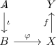
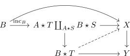
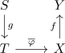
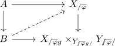
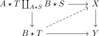

induced map for the slice and pushout as inner anodyne
Proposition
Let $A,B,S,T$ be simplicial sets, $i: A \rightarrow B, g: S \rightarrow T$ be monomorphisms of simplicial sets, such that
- $i$ is right anodyne / inner anodyne map
or
- $g$ is left-anodyne / inner anodyne map
Then the canonical map
is also inner anodyne
Proof
reminder
Note the bijection of lifting problems:
a)
for a diagram

b)

c)
d)
for a diagram


(cf. bijection between lifting problems of join slice adjunction )
Proof
Let $f$ be an inner fibration. Then we have to construct a lift

$i$ inner anodyne
Let $C \coloneqq \{\iota: A \rightarrow B\}$ be the set of of monos such that $\iota \widehat{\star} g$ is inner anodyne for all monomorphism $g: S \rightarrow T$ This is saturated (cf. set with induced pushout left join morphism admitting lift as saturated set, for $f_i$ as inner fibrations).
It thus suffices to show that any right horn (inner horn) inclusion $\iota: \Lambda_j^n $\rightarrow \Delta^n$ inclusion lies in $C$ because then all right (inner) anodyne maps lie in $C$, as $C$ is saturated (cf.right anodyne as saturation of right horn inclusions, inner anodyne as saturation of inner horn inclusion)
Let $D = \{g: S \rightarrow T\}$ be the set of monos such that $(\iota: \Lambda_j^n \rightarrow \Delta^n) \widehat{\star} g$ is inner anodyne. This is saturated (cf. set with inducde pushout right join morphism admitting lift as saturated set)
Therefore we will show that $\partial \Delta^n \rightarrow \Delta^n \in D$, because the monos are generated by the boundary inclusion (cf. monomorphisms as saturated closure of boundary inclusion).
Thus it remains to show that
is inner anodyne
using j horn as union of joins this is given by the inner horn inclusion
Since $j \neq \{0\}$ it follows that this is the inner horn inclusion, therefore especially inner anodyne (cf.
b)
Let $D = \{g: S \rightarrow T\}$ be the set of monos such that $\iota \widehat{\star} g$ is inner anodyne for any mono $\iota$. This is saturated (cf. set with induced pushout right join morphism admitting lift as saturated set)
Therefore it suffices to show that any left (inner) horn inclusion $\Lambda_j^n \rightarrow \Delta^n$ is in $D$, as left anodynes are the saturation of left horn inclusions.
Let $C$ be the set of morphisms such that $\iota \overline{\star} \Lambda_j^n \rightarrow \Delta^n$ is inner anodyne. It is saturated (cf. above), hence we may again assume that $\iota = \partial \Delta^n \rightarrow \Delta^n$.
But then
is given as inner horn inclusion $\Lambda_{m+1+j}^{m + 1 + n} \rightarrow \Delta^{m+1+n}$